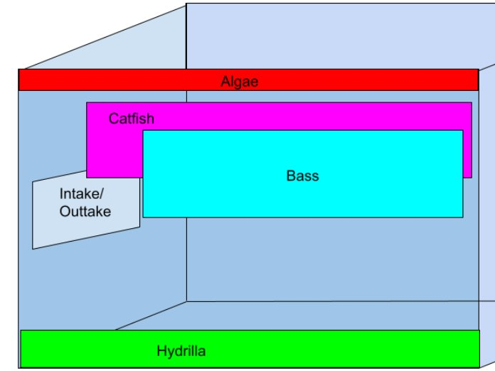
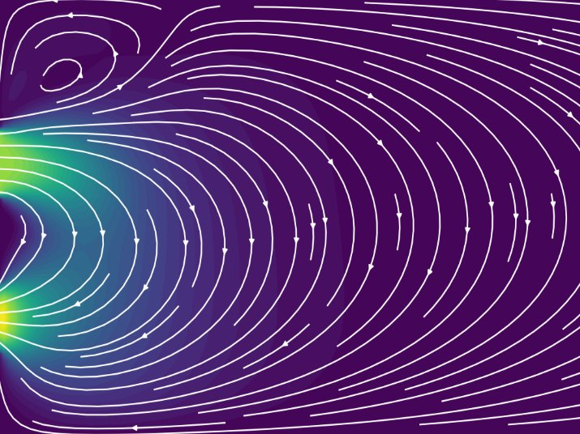
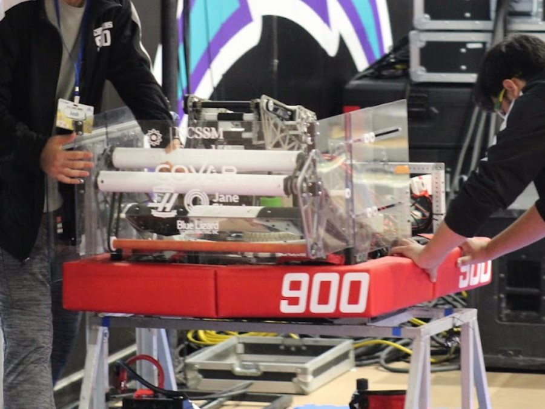
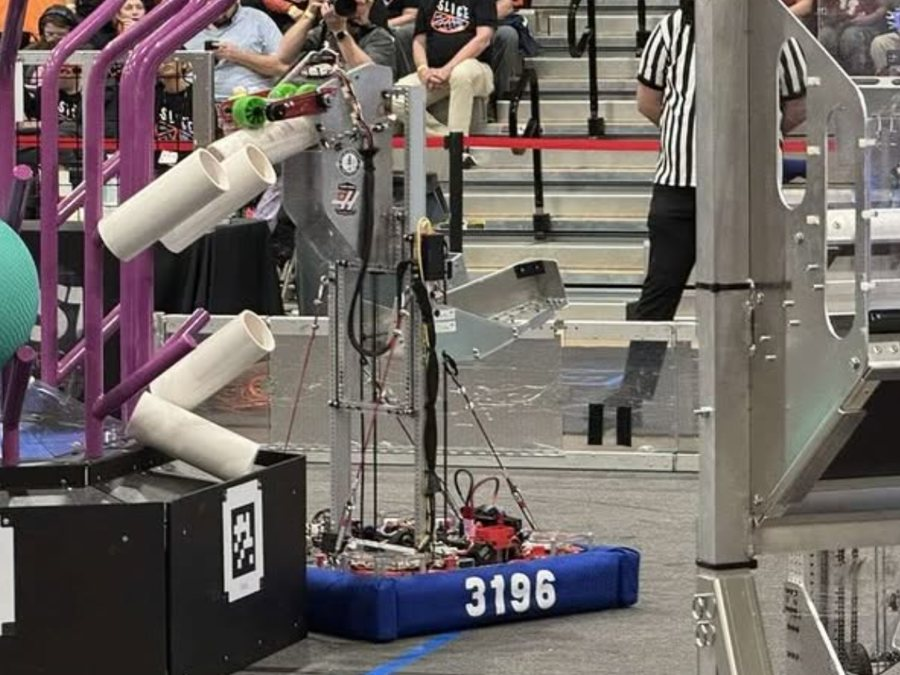
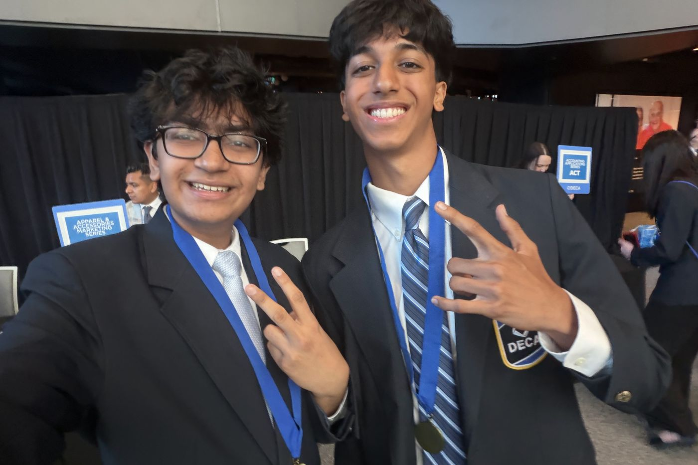
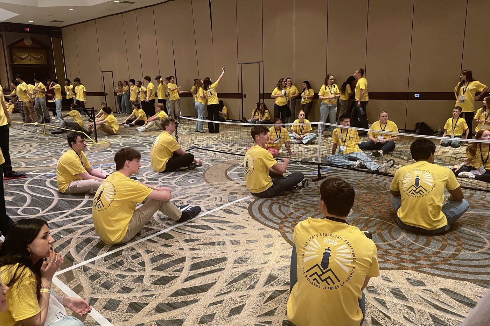

Neil Talaviya
photographer & filmmaker engineer & researcherportfolio
Images shot on Canon Rebel t6 (miraculously). Capturing anything possible.
events
Events I've been invited to photograph.
ftc scrimmage
10 · 2026Invited as event photographer for an eight-team “Robot in 5 Weeks” scrimmage.
alumni weekend
10 · 2026Hired as event photographer for NCSSM’s annual Alumni Weekend, hosting 800+ alumni and guests from classes as far back as 1986.
frc district competition
02 · 2026Team 900’s photographer for FIRST NC’s first district competition.
films
Short films documenting my senior year of high school away from home.
first last day
0:29
canoes in banff
0:14
brand new day
0:29
co27 signing in
2:44
senior sunrise
0:26
sacc block party
0:29
unis on top
0:32
last day as a kid
0:15
research
a line about what draws you to research
Hamlet, NC & the Amazon data center
How a place’s history shapes the construction of a data center, and how that construction reshapes the place in turn.
intercity competition
Modeling how intercity competition affects where data centers get built.
engineering
a line about the engineering you do
McGuire Nuclear Station x Lake Norman

(1)
(2)A computational fluid dynamics model of McGuire Nuclear Station’s surface cooling-water discharge into Lake Norman and its effect on aquatic life. Finding: underwater discharge is better for the lake’s aquatic life.
The Zebracorns Team 900 x Team SPORK 3196

(1)
(2)your role, the robot, a competition result
leadership
a line about leadership and business

impact without a title
Ran for state office twice and lost both times. I kept working anyway, building up my chapter and contributing across the state without the title.

FBLA
events, roles, results
TSA
events, roles, results
Data centers are usually described as placeless infrastructure, however all data centers are built on land with a history. This project looks at this situation through Hamlet, North Carolina, where Amazon is building its ten billion dollar data campus. Looking at the history of Hamlet and its environment, the question about how the construction of data centers and its opposition are influenced by both modern quality-of-life concerns as well as deeper historical motives naturally arises. Hamlet makes this question more pressing. As a former railroad hub, the town turned towards the food industry in its economic decline, and a fire in one of its major factories killed twenty-five people. Now, the Amazon data campus is targeting the similar logic of restoring the economy in a period of decline, under “Project Blue Marlin.”
By looking at local histories and public records, permit testimony, and the transformation of the site, this paper looks at how official stories of progress compare with how residents feel. As research is currently ongoing, there are no definite conclusions. However, it is likely that memory of the past may not only act as a background, but also as a framework through which the local community interprets modern changes. By viewing data centers as a historical actor instead of a simple location, we can see data center construction as one of the next steps in rural industrial development. In addition, it can also be used as a way to assess how a development can either protect its lands history or overwrite it.
Paste the full proposal here.
About 40% of all nuclear power plants are once-through cooled, meaning that they directly release their cooling water into natural water bodies. These plants produce high amounts of thermal pollution which can harm the local aquatic ecosystem. Changing the depth of release channels can minimize the effects of thermal pollution. To test a viable depth for water channels, a computational fluid dynamics (CFD) model was developed using the OpenFOAM library in C++ which allowed for numerical heat transfer and fluid flow. Using Lake Norman, NC and the McGuire Power Station as the main test environment, information collected from literature review about optimal conditions was used to model aquatic flora and fauna, including bass, catfish, algae, and hydrilla. By keeping track of temperature, pH, and dissolved oxygen in target regions, variances from optimal conditions for species could be found. With McGuire Power Station releasing water 9℃ warmer than normal into 12m deep water, many changes were observed. When water is released on the surface, as it currently is, the model indicates optimal conditions for algal growth, likely due to the flowing nature of the water. Testing found that a depth of 7-8 meters led to the most optimal conditions with little variance (<8%) from fish and plant optimal ranges and poor conditions for algae growth. This method of developing a computational model to test thermal effects of plants allows already built once-through cooled plants to feasibly change, given current construction standards.